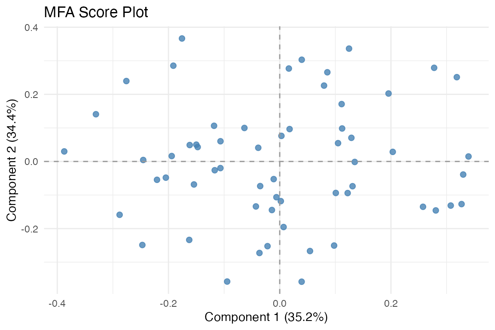
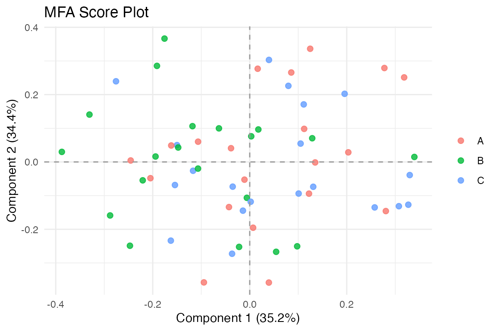
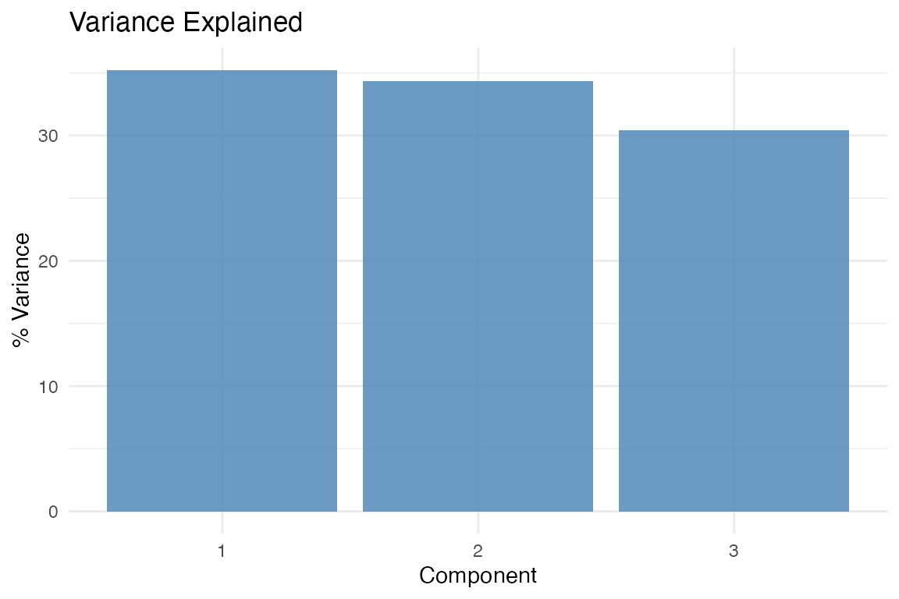
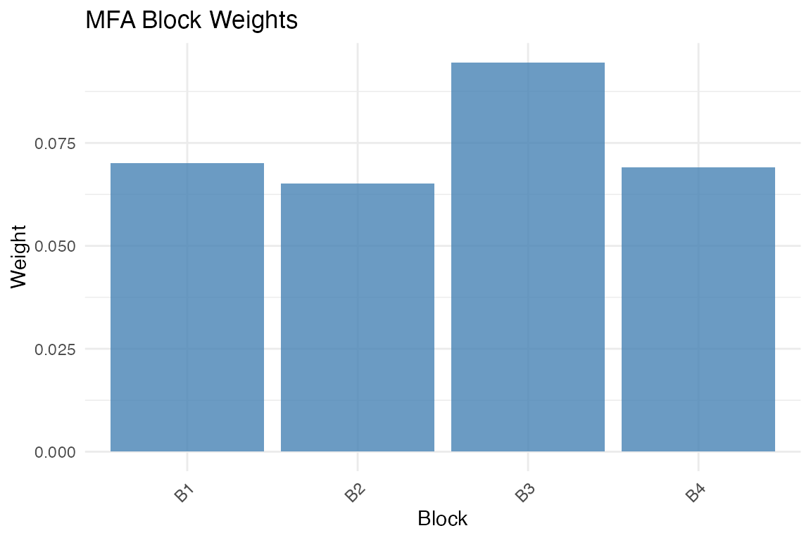
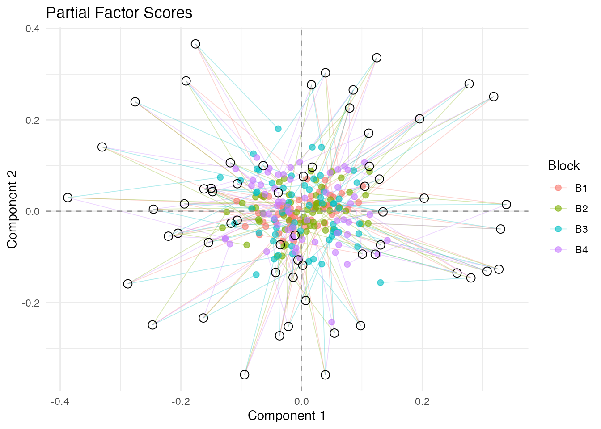
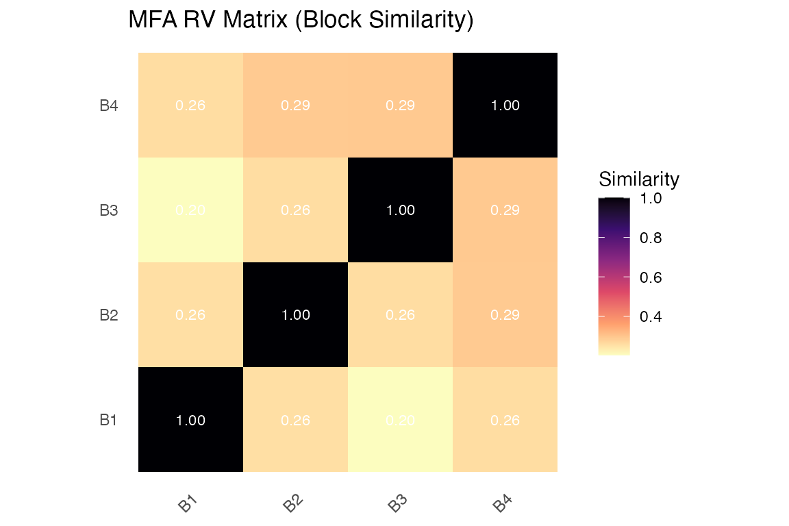
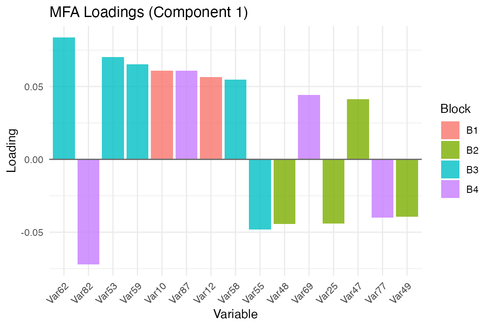

Why MFA?
Multiple Factor Analysis (MFA) solves a common problem: you have measured the same observations using different instruments, different feature sets, or at different time points — and you want a single, integrated view. Standard PCA on the concatenated data fails here because blocks with more variables or higher variance dominate the solution. MFA corrects this by normalizing each block before integration, so every data source contributes fairly.
MFA belongs to the “French school” of multivariate analysis, developed by Escofier and Pagès in the 1980s. It remains one of the most principled approaches for multi-table data integration.
Quick start
Generate four blocks of data that share three latent components. Each block has a different number of variables — exactly the situation where plain PCA on the concatenated data would be misleading.
sim <- synthetic_multiblock(
S = 4, n = 60,
p = c(20, 30, 15, 25),
r = 3, sigma = 0.3, seed = 42
)
sapply(sim$data_list, dim)
#> [,1] [,2] [,3] [,4]
#> [1,] 60 60 60 60
#> [2,] 20 30 15 25Fit MFA and extract the compromise scores:

Observations in the MFA compromise space. The first two components capture the dominant shared structure across all four blocks.
The score plot shows 60 observations positioned according to their combined profile across all four blocks. Components 1 and 2 explain the largest portion of shared variance.
The core idea
MFA proceeds in two stages:
Normalize each block so that no single block dominates. The default approach divides each block by its first singular value — this makes the maximum inertia of each block equal to 1.
Apply PCA to the concatenated, normalized blocks to extract global components that summarize the shared structure across all data sources.
The result is a compromise factor space where observations are positioned according to their combined profile across all blocks.
Working with the results
The MFA result is a multiblock_biprojector from the
multivarious package. You can access global scores,
block-specific loadings, and normalization weights:
head(S, 4)
#> PC1 PC2 PC3
#> Obs1 0.11216956 0.09830377 -0.4334275
#> Obs2 0.01771288 0.09650491 -0.1327023
#> Obs3 -0.14997782 0.05007061 0.3016705
#> Obs4 0.31836131 0.25117706 -0.1006403
# Normalization weights — blocks with more variables get smaller weights
fit$alpha
#> B1 B2 B3 B4
#> 0.07002450 0.06521398 0.09453764 0.06909297Notice how blocks with 30 and 25 variables (blocks 2 and 4) receive smaller weights than the block with 15 variables (block 3). This is MFA’s key balancing act.
Block-specific loadings are slices of the concatenated loading
matrix, indexed by block_indices:
str(fit$block_indices)
#> List of 4
#> $ : int [1:20] 1 2 3 4 5 6 7 8 9 10 ...
#> $ : int [1:30] 21 22 23 24 25 26 27 28 29 30 ...
#> $ : int [1:15] 51 52 53 54 55 56 57 58 59 60 ...
#> $ : int [1:25] 66 67 68 69 70 71 72 73 74 75 ...Visualization
muscal provides several plotting functions that work
with both base R and ggplot2. When ggplot2 is loaded, most functions
return ggplot objects.
Score plot
The primary visualization shows observations in the compromise space. You can color points by an external variable to look for group structure:

Score plot colored by a grouping variable.
Variance explained
Assess how many components to retain:
plot_variance(fit, type = "bar")
Proportion of variance captured by each component. With three true latent factors and moderate noise, the first three components stand out clearly.
Block weights
Understand the normalization effect:
plot_block_weights(fit)
MFA normalization weights. Blocks with smaller first singular values receive larger weights, equalizing their contribution.
Partial factor scores
Each block has its own “view” of the observations. Partial factor scores show where each block would place the observations, connected to the consensus position:
plot_partial_scores(fit, connect = TRUE, show_consensus = TRUE)
Partial factor scores. Lines connect each block’s view to the consensus. Short lines mean the blocks agree about that observation.
Large divergence indicates disagreement between blocks for that observation.
Block similarity
The RV coefficient matrix shows how similar the blocks are to each other:
plot_block_similarity(fit, method = "RV")
RV coefficient matrix. Values near 1 indicate blocks that carry similar information.
Variable loadings
Visualize which variables drive each component:
plot_loadings(fit, type = "bar", component = 1, top_n = 15)
Top 15 variable loadings on component 1, colored by block membership.
Normalization schemes
MFA supports several block-weighting schemes via the
normalization argument:
"MFA"(default): Weight by inverse squared first singular value. This is the classical MFA normalization."RV": Weight blocks by their contribution to the RV coefficient matrix. Blocks more similar to the overall structure receive higher weight."Frob": Weight by Frobenius norm."None": No normalization — equivalent to ordinary PCA on concatenated data."custom": Supply your own weight matrices viaA(column weights) andM(row weights).
# RV-based normalization
fit_rv <- mfa(sim$data_list, ncomp = 3, normalization = "RV")
# Custom weights: inverse-column-count weighting
ncols <- sapply(sim$data_list, ncol)
custom_weights <- rep(1 / ncols, ncols)
fit_custom <- mfa(sim$data_list, ncomp = 3,
normalization = "custom", A = custom_weights)When to use MFA
MFA is appropriate when:
- You have multiple measurement modalities on the same subjects (e.g., gene expression + metabolomics + clinical variables).
- You want to identify patterns that are consistent across data sources.
- You need block contributions to be balanced regardless of the number of variables per block.
MFA is not appropriate when:
- Blocks have different observations (use
anchored_mfa()instead). - You want blocks with more variables to naturally dominate (use standard PCA).
- Your goal is prediction rather than exploratory structure discovery.
Next steps
-
vignette("linked_mfa")— Anchored MFA for blocks with different row structures -
?covstatis— STATIS analysis for covariance matrices -
?penalized_mfa— MFA with sparsity penalties -
?ipca— Integrative PCA with multiplicative penalties
References
Escofier, B., & Pagès, J. (1994). Multiple factor analysis (AFMULT package). Computational Statistics & Data Analysis, 18(1), 121-140.
Abdi, H., Williams, L. J., & Valentin, D. (2013). Multiple factor analysis: Principal component analysis for multitable and multiblock data sets. Wiley Interdisciplinary Reviews: Computational Statistics, 5(2), 149-179.